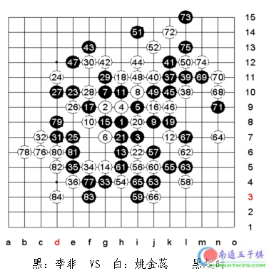
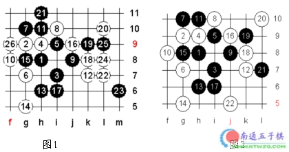
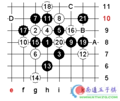
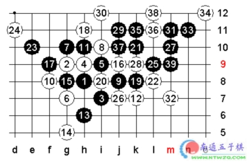

巧妙的圈套[2002年北京五子棋公开赛]
#1 巧妙的圈套[2002年北京五子棋公开赛] 作者：有志青年 发表时间：2006-1-28 20:41:33
这是在2002年北京五子棋公开赛中的一盘精彩对局，由著名网络棋手天津的李非（网名小龙女）对那威俱乐部的姚金蕊三段，开局是斜月。在此之前两人都是全胜，可以说这盘的胜者基本就是女子组的冠军了。所以很多人都非常的关注这盘棋，作为那威五子棋俱乐部的教练组当然也要出谋划策了。
比赛开局是斜月，白10是弱防，到16是设计好的圈套，企图等黑棋进攻错误出现，白就有机会夺回先手。之前在A组预选赛里出现过一盘类似的变化，是17走I6，感觉黑很强，如果在李非走出这个变化，白棋在实战里用目算是很难走出最强防的，所以俱乐部的几位老师立刻对这个17的变化在中午比赛休息的时候进行了研究，结论是黑固然优势，但只要白走对了，黑胜还是很困难的。以下变化见例图1、2，都是黑难胜的走法。

但实战李非17走了F9，经过局后研究这手是黑必胜的，只可惜以后的对局李她没能走对，下面我们看黑胜的正确走法是什么。

黑21是绝妙的后中先，最直接的意图是要在H12做双杀，还有在右边连续进攻胜或者联系左右边进攻取胜等种种手段，22有ABCD四个点的防守， A点是最强防，一手可以防住上边说的三种杀法，但是黑的妙手连发，最终还是可以胜的。见下图

#2 Re:巧妙的圈套[2002年北京五子棋公开赛] 作者：小玄 发表时间：2009-3-26 0:07:59
图片连结坏了？
［ 有志青年 于 2009-3-26 10:49:25 时奖励此帖[金币加 20 威望加1］
#3 Re:巧妙的圈套[2002年北京五子棋公开赛] 作者：小丸.net 发表时间：2009-3-26 8:22:14
事实证明，团队战术是很可怕的。可怜的李非啊。。。。。